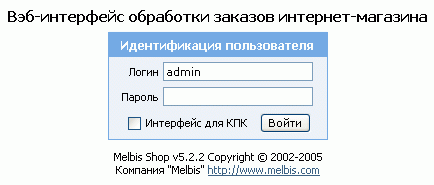
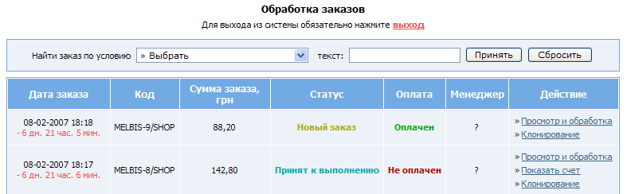
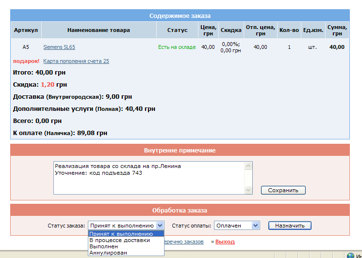

Обработка заказов может осуществляться не только с помощью клиентской программы Melbis Shop, устанавливаемой у владельца магазина, но и из любой точки доступа в интернет через программу Melbis Shop Trader или веб-интерфейс.
Вход в клиентскую часть осуществляется набором в интернет-обозревателе персонального компьютера или КПК (карманного персонального компьютера) адреса магазина с добавкой "/admin", например, "www.shop.com/admin" и, в случае использовании КПК, указания об использовании интерфейса для КПК.
Веб-интерфейсом могут пользоваться как администратор магазина, указывая про входе логин "admin" и свой пароль, так и менеджеры, указывая свои логин и пароль согласно реестра менеджеров.

После входа появляется окно обработки заказов - как новых, так и содержащихся в картотеке. Здесь же можно найти заказ по условию "Код товара/Код заказа/Логин покупателя/Наименование товара содержат текст...":

Так же, как и с помощью windows-программы, заказ можно просматривать, редактировать, обрабатывать, а также клонировать, то есть создавать новые на основе текущего.
При просмотре заказа выдается информация о покупателе и о содержимом заказа. В выпадающем меню окна "Обработка заказа" можно назначить заказу соответствующий статус, в соседнем- статус оплаты. Также имеется возможность прочитать и отредактировать внутреннее примечание к заказу.

При использовании для просмотра заказов КПК, отображается аналогичная информация в несколько сокращенном виде и по-иному скомпонованная.